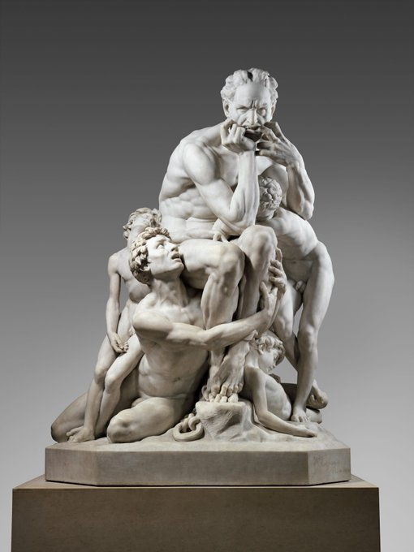

Hablemos de Esculturas.
Venus Capigilia.

La venus Calipigia, o Venus de las bellas nalgas. Es una copia de un original helenístico del siglo III a.C. Podemos ver como la joven levanta su peplos para mostrarnos en un despliegue de picardía y sensualidad su trasero y parte de su pubis. La Venus se muestra desvergonzada, marcando precedentes en lo referente al desnudo femenino en el arte, de hecho, el término calipigia se usa para designar un desnudo en el que se enseña el culo, básicamente. Supongo que el artista fliparía si le dijeran que cientos de años después se censuran los pezones femeninos, por ejemplo. A. Acosta.
Ugolino y sus Hijos
Ugolino y sus hijos. Jean Baptise Carpeaux. Carpeaux hizo conocida su carrera como artista con esta obra. Se basa en el capítulo 33 de la Divina Comedia de Dante. En el cual el conde Ugolino es condenado a morir en la torre de una prisión con sus hijos, los cuales se sitúan a su alrededor. El conde pisano está predestinado a morir de hambre con su familia, pero esta historia macabra nos habla de las facetas mas bajas del ser humano. Los hijos prefieren ser devorados antes que dejar a su padre muera de hambre, así que vemos como Carpeaux nos sitúa en el centro de la duda que reconcome a la figura principal de la obra. La manera en la que representa su espalda, con la piel fina ya marcando los huesos sobresalientes, la forma en la que se muerde los dedos en un intento de contener sus instintos... Además, no podemos dejar de ver la lectura del paso del tiempo y la visión de la muerte, ya que, el artista sitúa entorno al conde de mayor a menor, simulando lo que podría ser una sucesión de etapas vitales. El más pequeño de los hijos, se encuentra muerto a los pies del padre, y sin embargo, podría pasar ante nuestros ojos por un niño dormido placidamente. Aunque la obra se enmarca en el contexto del París de 1860, bien podemos encontrar ciertos paralelismos en cuanto a composición con el Laooconte y sus hijos del S. I a. C. Ciertamente, y a mi parecer, Lacoonte tiene un aura de heroicidad que no recubre a Ugolino En él, más bien, podemos ver a un hombre que nos muestra patetismo y horror. A. Acosta